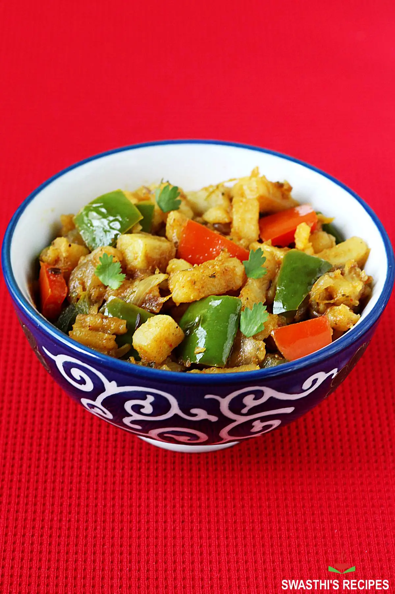

Aloo Capsicum Recipe

Description
Aloo Capsicum is one my favorite dishes and it is one of those recipes that I always thought I would be able to have with me.
Ingredients
- Oil - 3 tbsp
- Cumin Seeds / Jeerakam - 1 tsp
- Onion - 1 large sliced
- Potatoes - 2 large peeled and cubed
- Turmeric Powder / Manjal podi - 1 tsp
- Salt to taste
- Capsicum / Bell Pepper - 1 cubed ( I used a mixture of yellow and red)
- Chill powder - 2 tsp
Steps
- Heat oil in a kadai. Add in cumin and crushed garlic, fry them for few mins.
- Add in onions and potatoes and toss well in the oil.
- Add in salt and turmeric powder and mix well. Cover and cook for 15 mins on a low flame till the potatoes are tender.
- Now add in capsicum and mix well on high heat for 5 mins.
- Now Cook till the potatoes turn crispy and golden.
- Add in chilli powder and toss well. Cook for couple of mins.
- Serve with rice and rasam.